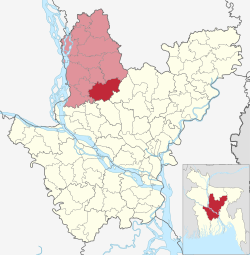

অবস্থান ও আয়তন
ঢাকা থেকে ৬৮ কিলোমিটার দূরে এবং টাংগাইল সদর থেকে ২৭ কিলোমিটার পূর্ব দিকে এ উপজেলাটির অবস্থান ২৪.১০৮৩° উত্তর ৯০.০৯১৭° পূর্ব। মির্জাপুর উপজেলার উত্তরে সখিপুর উপজেলা, দক্ষিণে ঢাকা জেলার ধামরাই উপজেলা, পূর্বে গাজীপুর জেলার কালিয়াকৈর উপজেলা, পশ্চিমে দেলদুয়ার উপজেলা। মির্জাপুরকে বলা হয় উত্তরবংগের দরজা। ঢাকা থেকে টাংগাইল এর যে কোন উপজেলায় যাবার একমাত্র রাস্তাটি মির্জাপুরের উপর দিয়ে চলে গেছে। মির্জাপুরের উত্তর পাশ দিয়ে বয়ে গেছে বংশাই নদী এবং দক্ষিণ পাশ দিয়ে বয়ে গেছে লৌহজং নদী।
প্রশাসনিক এলাকা
১৪ টি ইউনিয়ন এবং ১টি পৌরসভা (মির্জাপুর নিয়ে মির্জাপুর উপজেলা গঠিত।। যথাঃ ১। গোড়াই ইউনিয়ন ২। ফতেপুর ইউনিয়ন ৩। জামুর্কী ইউনিয়ন ৪। বানাইল ইউনিয়ন ৫। আনাইতারা ইউনিয়ন ৬। ভাতগ্রাম ইউনিয়ন ৭। ওয়ার্শী ইউনিয়ন ৮। বহুরিয়া ইউনিয়ন ৯। মহেড়া ইউনিয়ন ১০। তরফপুর ইউনিয়ন ১১। আজগানা ইউনিয়ন ১২। বাঁশতৈল ইউনিয়ন ১৩। লতিফপুর ইউনিয়ন ১৪। ভাওড়া ইউনিয়ন ১৫। মির্জাপুর পৌরসভা
উল্লেখযোগ্য ব্যক্তিত্ব:
- রণদাপ্রসাদ সাহা, বাংলাদেশের বিখ্যাত সমাজসেবক এবং দানবীর ব্যক্তিত্ব ছিলেন। আর. পি. সাহা নামেই তিনি সমধিক পরিচিত ছিলেন।
- অমৃতলাল সরকার, ভারতীয় উপমহাদেশের ব্রিটিশ বিরোধী স্বাধীনতা আন্দোলনের একজন অন্যতম ব্যক্তিত্ব বিপ্লবী অনুশীলন দলের সভ্য।
- প্রতিভা মুৎসুদ্দি, বাংলাদেশের একজন শিক্ষাবিদ ও ভাষা সংগ্রামী। শিক্ষাক্ষেত্রে অবদানের জন্য তিনি ২০০২ সালে একুশে পদক লাভ করেন।
- জয়া পতি, নারী শিক্ষাকর্মী।
- আবুল কালাম আজাদ সিদ্দিকী: সাবেক সংসদ সদস্য
- একাব্বর হোসেন, সাবেক সংসদ সদস্য
মির্জাপুর উপজেলা
মানচিত্রে মির্জাপুর উপজেলা